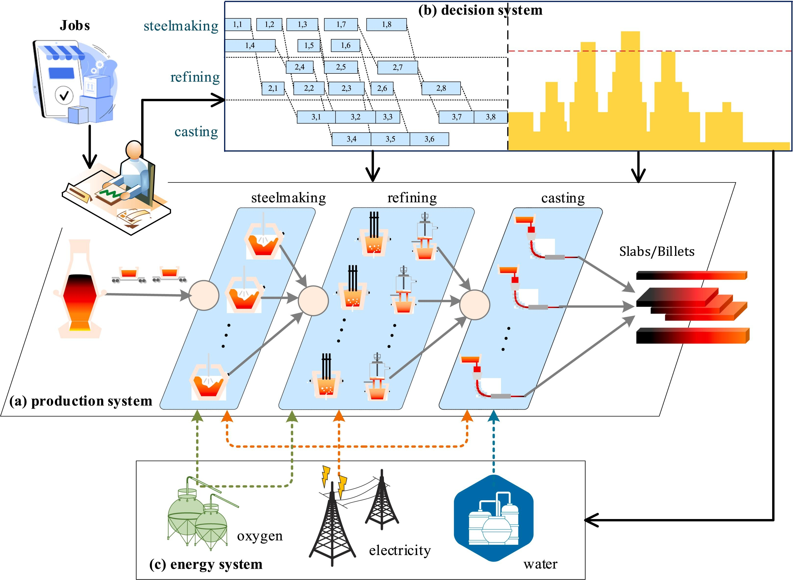
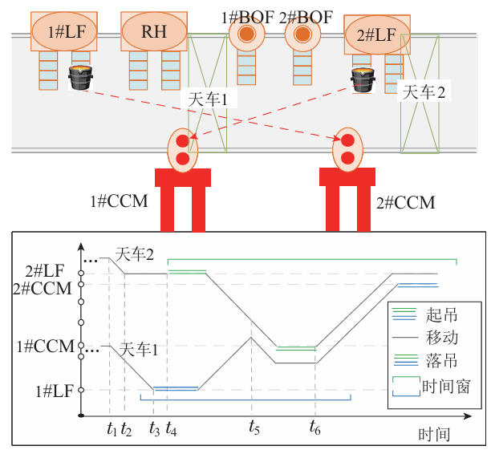
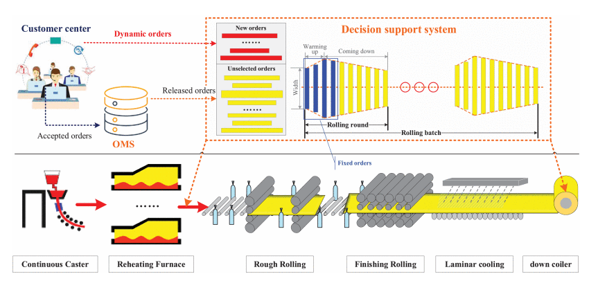
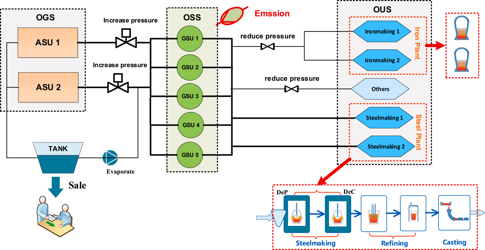

复杂物理系统建模优化
针对复杂工业过程与信息物理系统中的建模、状态表征、机理分析与优化决策问题，课题组围绕非线性系统辨识、物质流与能量流耦合分析、仿真建模、数字孪生与运行优化开展研究，推动数据驱动方法与机理模型融合，为复杂系统的分析、预测与优化提供支撑。
针对复杂工业过程与信息物理系统中的建模、状态表征、机理分析与优化决策问题，课题组围绕非线性系统辨识、物质流与能量流耦合分析、仿真建模、数字孪生与运行优化开展研究，推动数据驱动方法与机理模型融合，为复杂系统的分析、预测与优化提供支撑。
针对网联汽车测试验证中的场景生成、仿真评估、信息交互与多指标协同优化问题，课题组开展信息物理融合驱动的场景建模、测试场景生成与系统分析研究，为智能网联汽车相关技术验证提供方法支撑。
针对钢铁生产中工艺约束复杂、工序耦合紧密、运行扰动显著条件下的生产计划与调度优化问题，课题组围绕炼钢—连铸、热轧及相关流程开展软调度、鲁棒优化、在线调度和集成计划与调度研究，服务钢铁生产过程的稳定运行与效率提升。
针对车间生产与物料运输协同中的任务分配、时空协调、缓冲约束与运输冲突问题，课题组围绕混合流水车间、车间物流与天车运输等场景开展建模与求解研究，提升复杂车间系统的协同调度能力与运行效率。
针对复杂动态环境中的序贯决策、在线优化与数据驱动分析问题，课题组开展分层强化学习、在线学习、学习增强优化和数据驱动建模研究，提升复杂工业场景中的实时决策、自适应优化与策略学习能力。
针对多目标、多约束和大规模组合优化问题的高效求解需求，课题组围绕进化算法、差分进化、蚁群优化、NSGA-II、BRKGA、Pareto 局部搜索等方法开展研究，推动优化算法在钢铁生产、车间调度和能源系统中的应用。
面向智慧交通场景，课题组围绕智能网联汽车测试场景生成、仿真评估、信息物理融合与多指标协同优化开展研究，推动人工智能与优化方法在复杂交通环境中的应用。
面向钢铁生产过程的数字化映射与协同优化需求，课题组围绕炼钢车间建模、物流仿真、运行分析、可视化平台与数字孪生调度方法开展研究，推动钢铁生产系统从静态分析向动态感知与协同优化演进。

面向车间生产调度场景，课题组围绕多工序、多资源、多约束条件下的任务排序、工序衔接与协同优化问题开展研究，为生产计划制定、节奏协调与运行优化提供方法支持。

面向天车运输调度场景，课题组围绕任务分配、路径协调、运输阈值约束、冲突消解与实时调度等问题开展研究，提升复杂工业场景中运输组织的智能化水平。

面向热轧线调度场景，课题组围绕动态订单到达、工艺约束满足、多目标优化、分时电价与集成计划调度等问题开展研究，为热轧产线的稳定运行和效率提升提供支撑。

面向工业过程中的能源调度场景，课题组围绕副产煤气分配、氧气系统优化、能耗约束、峰谷电协同以及过程参数优化等问题开展研究，推动生产效率与能源利用效率协同提升。